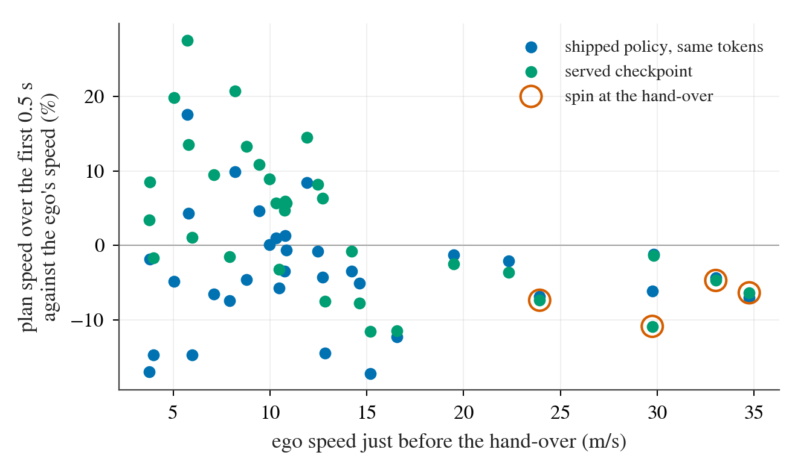
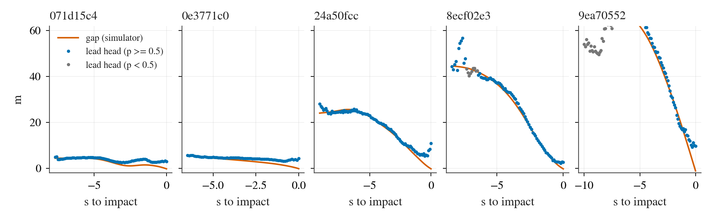

所以唯一的纵向信号是 plan 位置点的间距，它来自在 NAVSIM 上模仿微调过、带 ego 状态 adapter 的 plan 通路，再由位置跟踪的 MPC 执行。
二、nuPlan 公开集（1491 个 scene，44 个 log）
driver
scene 数
零分
at-fault 碰撞 rollout
P2H10-F-s0
1491
89
12
P2H10-F-s1
1491
85
10
APY10m10-AB-s0 / s1
1491
83 / 89
10 / 14
AP2H10-AB-s0 / s1（只有前 700 个 scene）
700
28 / 31
7 / 9
WA-JEPA（reference）
1491
146
5
SH30-F-s0
1491
139
32
来源：experiments/alpasim/results/collisions/nuplan_tables.md（Inventory）。六组 run 的碰撞 rollout 都保留了 rollout.asl，全部是原始 rollout。AP2H10 在后 791 个 scene 上的 run 当时还在 lane CF1 里跑，没有读。
class A 份额小而且集中。4 次、2 个 scene，都是静止起步撞上前方 1.8–3.3 m 的停车，在路径上（偏移 < 0.25 m），plan 长度是当前速度的 1.2–2.7 倍。六组 run 全部在这两个 scene 上撞。按 AlpaSim 输入标准训练的配方 class A 更多（APY10m10 10 / 24，AP2H10 7 / 16）。
看得到，人也贴得近。16 次里物体在撞前至少 2 s 位于前摄视野、60 m 以内（4 次始终不在视野内：从后方来的车）；日志里的人类司机在 10 次里与同一物体的最近距离不到 1 m。
route 由地图生成（首个 waypoint 在前方 36–55 m），不是日志路径：40 个 scene 里 14 个的首个 waypoint 偏离日志路径中位 1 m 以上，有几个差一条车道（其中一部分是因为 ego 已经开过日志终点）。样例规则（首个 5 m 外的 waypoint，|y| > 2 m 判转弯）在 40 个 scene 上给出左 / 直 / 右 = 2879 / 2539 / 2529；同一规则放到日志路径、日志位姿上是 912 / 3561 / 703。也就是 68% 的调用带转弯 command，日志口径是 31%。但 plan 几乎不读它：同一批 token 上把 command 强制成直行，4 s 终点横向中位只动 0.02 m（各 scene 中位 0.00–1.48 m，p95 超过 1 m 的 8 个 scene 都在路口），4 s 弧长之比 0.97–1.04。
来源：pai_plumbing.md 末行；pai_tables.md「Command and shipped-plan sensitivity」。
接口缺陷：返回的轨迹不从当前车速起步
driver 把 plan 的 0.5 s 点线性重采样到 10 Hz（主办方 LTF 样例的函数），所以轨迹首段的速度等于 plan 前 0.5 s 的平均速度，与 ego 当前车速无关；simulator 的 nonlinear MPC 跟踪的是位置。hand-over 之前（1.45–1.75 s 的决策，此时状态仍是日志的）读数如下。
hand-over 前车速
scene 数
served plan 首 0.5 s 速度对当前车速（中位）
同一 token 上 shipped 权重
4 s 平均，served / shipped
0–2 m/s
7
（静止）
（静止）
+65% / −86%
2–5 m/s
3
+3%
−15%
+3% / −4%
5–13 m/s
19
+8%
−1%
+3% / −2%
13–23 m/s
6
−6%
−4%
−10% / −10%
> 23 m/s
5
−6%
−6%
−6% / −4%
来源：pai_tables.md 末节「Plan speed against the ego's speed just before the hand-over」。
高于 23 m/s：spin。5 个 scene 里 4 个（23.9、29.7、33.1、34.8 m/s）首段比车速低 5–11%，hand-over 后 1.2 s 内控制器指令是刹车饱和 −9.0 m/s² 加 0.65–0.73 rad 转向，4 个全部 spin（2 个记 offroad，2 个记出 corridor）。这几处 plan 本身是直的。第 5 个（29.8 m/s）首段只低 1%，最大转向指令 0.004 rad，hand-over 时不 spin。
5–13 m/s：加速。served plan 首段比车速高 8%（shipped −1%），MPC 追位置，下一次决策在新车速上重新锚定、再要更多。19 个 scene 里 15 个在 hand-over 后 1.2 s 内的最大加速度是 1.4–3.8 m/s²；到 12 s 时，31 个没有 offroad 的 rollout 里 15 个车速超过日志的 1.2 倍（中位 1.17 倍）。
静止：起步。4 个静止开局的 scene 里 served plan 的 4 s 平均速度是 0.6–1.7 m/s，shipped 不超过 0.1 m/s。这是决策 162 / 167 的 adapter 速度先验换了一个域；并行的决策 218（lane DIAG1，同一批 rollout）把 5–13 m/s 段的超速归到 adapter 对喂入加速度的续接，把起步归到 bias 常数项。

图 2：hand-over 前 plan 首 0.5 s 的速度相对当前车速的偏差（车速 ≥ 2 m/s 的 scene）。看点：5–13 m/s 段绿点（served）整体在蓝点（shipped）上方；23 m/s 以上两者都偏低 5–11%，橙圈的 4 个在 hand-over 时 spin，唯一不 spin 的是 −1% 的那个点。
诊断臂 v1：轨迹从当前车速起步
预登记补记 1、2。做法：plan 的路径不动，沿路径重新定时，速度从当前车速出发、1 s 后并入 plan 自己的速度剖面；其余不变。它是对接口缺陷的诊断，不是候选，没有判定线。前 10 个 scene 先读（0.1538 → 0.3332），再按补记 2 扩到全部 40 个。
先是纵向。11 个是正面接触；9 个撞时超前日志 2 m 以上（6 个超前 13–39 m）；撞时车速中位 6.7 m/s（低于 3 m/s 的 2 个）。按日志的纵向位置、保留实际横向偏移，9 个不撞；留在日志路径上、速度不变，8 个不撞。nuPlan 上同样两个反事实是 11 和 20（共 22）：那边是横向，这边是 ego 跑到日志前面撞上回放的车流，其中 7 个同时离开日志车道 1 m 以上。
ego 正前方有什么。按日志车道算 class A 只有 3 个。按 ego 自己的直行走廊算，被撞物体在最后 8 s 里有 2 s 以上位于正前方的有 9 个；其中 5 个（071d15c4、9ea70552、0e3771c0、24a50fcc、8ecf02e3）shipped lead 头在这段时间的 74–92% 里跟在它上面，2 个 41–44%，2 个 0–7%（路边停放车、行人）。
plan 穿过物体。最后 4 s 里，served plan 在其 4 s 视野内到达物体（物体按匀速）的决策占一半以上的有 10 个；同一 token 上 shipped 权重的 plan 是 7 个，其 4 s 弧长是 served 的 0.50–0.87 倍。shipped 的 plan 慢一些，但让 shipped openpilot 停下来的也不是它。
起步。5 个从不超过 1 m/s 起步。pai1 记录的「开出 3 m 就撞」是 a28b6685：夜间从路边驶出，前方 2 m 有一辆停放车，日志从 0.36 m 处绕过；最初几个 plan 是当前速度的 2.5 倍。
来源：experiments/alpasim/results/collisions/nuplan_lead.md、pai_tables.md（Lead outputs）；预登记 experiments/alpasim/plans/2026-10-09-col1-lead-prereg.md。「及时看到」= 最后 8 s 内存在一次命中决策（概率 ≥ 0.5 且距离误差 ≤ max(2 m, 30%)），且此时 0.5 s 后开始以不超过 4 m/s² 减速还能停在 1 m 外。方括号是按 rollout 的 bootstrap 95% 区间。
真实间距
nuPlan 对照（走廊里有物体）：概率 ≥ 0.5 的比例 / 距离误差中位
PAI 全部有标签的决策：概率 ≥ 0.5 的比例 / 误差中位
0–5 m
93% / −0.7 m（class A 碰撞决策：93% / +1.2 m）
71% / +3.4 m
5–10 m
90% / −1.1 m
63% / +0.5 m
10–20 m
88% / −1.4 m
60% / −0.4 m
20–40 m
77% / −1.8 m
62% / −1.0 m
> 40 m
57% / −3.6 m
38% / −15.1 m
走廊里没有物体
17% 的决策概率 ≥ 0.5
来源：同上两个文件的 gap 分桶表。PAI 一列里碰撞 rollout 的标签是被撞物体（不论是否在走廊内），所以近距离桶混入了侧方物体。

图 3：PAI 上被撞车辆位于 ego 正前方、且 lead 头在其上的 5 次碰撞（071d15c4 前方慢车，0e3771c0 与 9ea70552 前方静止车，24a50fcc 与 8ecf02e3 按日志车道归为邻道车）。橙线是 simulator 的间距，蓝点是 shipped lead 头的距离（概率 ≥ 0.5）。看点：两者从几十米到几米一直重合，接触前最后 2–5 m lead 头偏远（读 3–10 m）；这段时间 plan 没有减速（见 p03、p05 的车速曲线）。
nuPlan：lead 输出不是修法。22 次碰撞里只有 4 次有前车可看；规则只翻这 4 次，同时在 14% 的干净 scene 里误触发（日志自己也在等的静止排队）。两个 class A scene 里有一个 lead 头把不到 2 m 的间距读成 5–10 m（决策 157 的近距偏远）。
PAI：及时看到了，覆盖正面的那一半。3 个 class A 全部提前 6–8 s 看到；按 ego 走廊算 12 个里 5 个在接近过程的大部分时间被正确跟踪。L2 通过。对「7 个」有两点保留：登记的「可翻转」只要求在还能停住时有过触发，对侧方物体可能是别的前车触发的（事后口径 6 / 12）；规则没有翻 0e3771c0（排队里 0.6–0.9 m/s 蠕行：高于静止阈值，又慢到减速分支不触发）。
六、最便宜的环内用法与上限（本轮不实现）
两件 serving 侧的事，都只用同一次 forward 已经算出的量。
返回从当前车速起步的轨迹（第三节）。不是 lead 机制；去掉 spin 和位置追逐。已实测，见诊断臂。
给 plan 加一个由 lead 决定的速度上限：lead 概率 ≥ 0.5 且「在前车后 4 m 处把速度降到前车速度」所需减速度超过 1.5 m/s²，或 ego 静止且 lead 在 6 m 内时，把 plan 沿自己的路径按该减速度重新定时（静止则保持）。用 served checkpoint 自己的 lead 输出不需要额外前向。